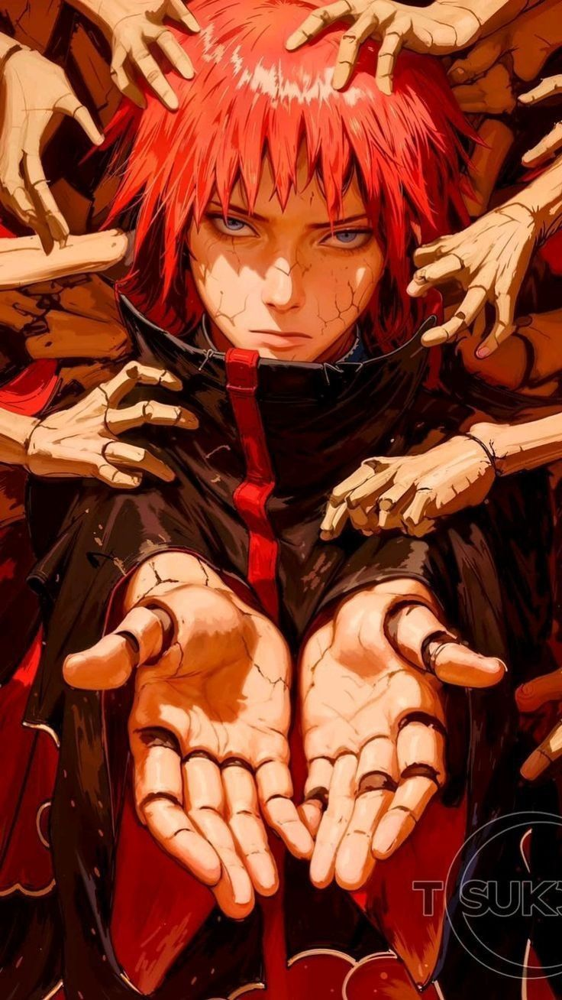

Sasori is a skilled and deadly member of the Akatsuki in Naruto, known for his mastery of puppet techniques and his obsession with creating eternal art. Originally from the Hidden Sand Village, Sasori was a prodigy puppeteer who turned to darker methods after experiencing loneliness and loss. His most unique ability is transforming human bodies into puppets, including himself—making his real body hidden inside a puppet shell. This grants him durability and allows him to avoid fatal damage as long as his core remains intact. Sasori controls hundreds of puppets at once, including his powerful “Red Secret Technique: Performance of a Hundred Puppets,” which can overwhelm entire armies.
He also uses deadly poisons on his weapons, capable of killing opponents quickly with no easy cure. One of his strongest assets is the Third Kazekage puppet, which retains its original abilities, including the powerful Iron Sand technique.
Sasori from Naruto has a cold, emotionless, and highly detached personality shaped by loneliness and loss. After losing his parents at a young age, Sasori became withdrawn and began rejecting human emotions, eventually seeing people as fragile and temporary. This led him to develop the belief that true art is something permanent and unchanging.
Because of this mindset, Sasori treats both enemies and allies with indifference, showing little to no empathy. He values efficiency, precision, and control, often approaching battles in a calm and calculated manner. His transformation into a human puppet reflects his desire to escape mortality and emotion, further emphasizing his detached nature.
Sasori from Naruto possesses deadly and highly advanced abilities centered around his mastery of puppet techniques, making him one of the most dangerous members of the Akatsuki. Sasori’s most unique ability is turning human bodies into puppets, including himself. His real body is hidden within a puppet shell, with only a small core containing his life force, making him extremely difficult to kill. This transformation allows him to avoid fatal damage and control his body like a weapon.
He can control a large number of puppets simultaneously using chakra threads, including his powerful technique, the Red Secret Technique: Performance of a Hundred Puppets, which can overwhelm entire armies. One of his strongest assets is the puppet of the Third Kazekage, which retains its original abilities, including the dangerous Iron Sand technique that can be shaped into weapons and projectiles.
Sasori also uses lethal poisons on nearly all his weapons, capable of killing opponents quickly with no easy cure. Combined with his strategic thinking, precision, and lack of emotion, his abilities make him an extremely efficient and deadly fighter in both close and long-range combat.

Sasori from Naruto carried out several important missions as a member of the Akatsuki, mainly focused on espionage, assassination, and capturing tailed beasts. Before fully joining the Akatsuki, Sasori had already committed major acts, including assassinating the Third Kazekage of the Hidden Sand Village and turning him into a puppet, which became one of his most powerful weapons. Within the Akatsuki, Sasori worked alongside partners like Deidara, carrying out missions to capture powerful targets and gather information. He also maintained a network of spies, including Kabuto Yakushi, which made him extremely valuable for intelligence operations.
One of his key missions involved assisting in the capture of Gaara, the One-Tail jinchūriki, contributing to the Akatsuki’s goal of collecting tailed beasts. His final mission leads to his battle against Sakura Haruno and Chiyo, where his past and emotions resurface. Despite his immense power, this confrontation ultimately ends in his defeat, marking the end of his journey as both a shinobi and an artist obsessed with eternity.
Sasori joined the Akatsuki after abandoning his life in the Hidden Sand Village and fully embracing his dark path in Naruto. Once a talented and respected puppeteer, Sasori became emotionally detached after the loss of his parents, eventually turning to forbidden techniques like transforming human bodies into puppets. After assassinating the Third Kazekage and turning him into one of his strongest puppets, Sasori was labeled a rogue ninja. His growing obsession with creating “eternal art” and his lack of attachment to human life made him a perfect fit for the Akatsuki’s goals.
He was recruited into the organization due to his deadly skills, intelligence, and usefulness in both combat and espionage. Within the Akatsuki, Sasori became a key member, often working with partners like Deidara. His decision to join wasn’t driven by loyalty, but by his desire to continue perfecting his art without limits, aligning with the organization’s darker objectives.